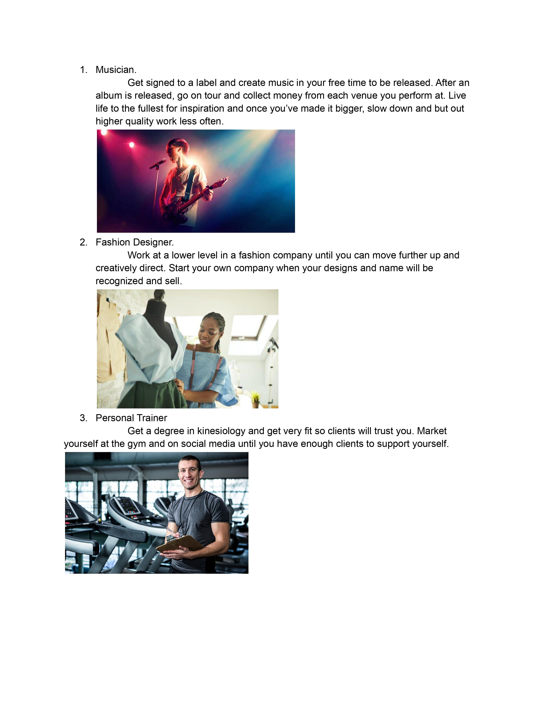
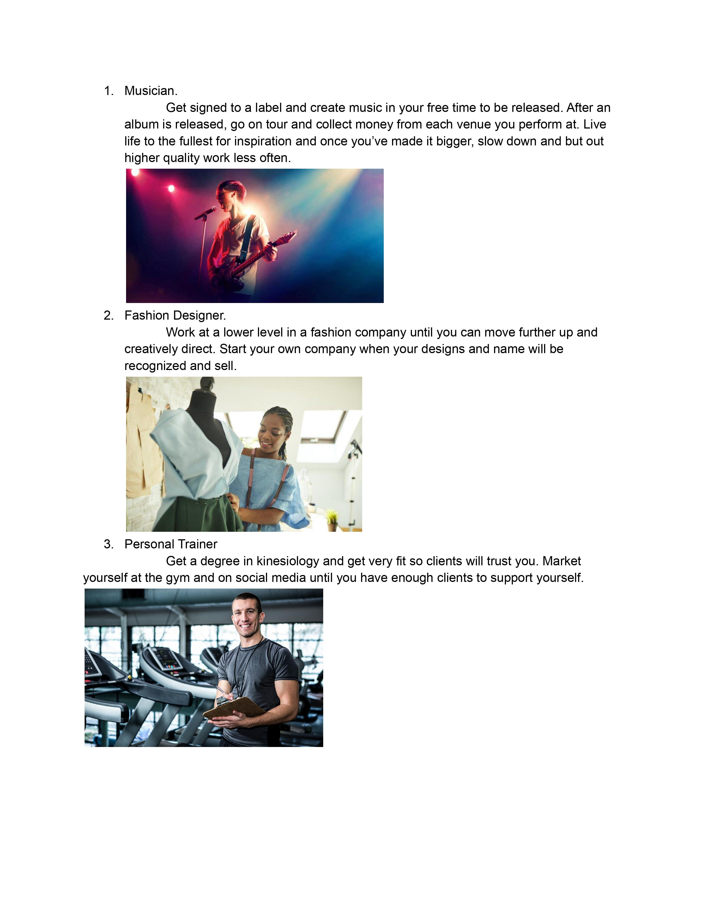

This is my first semester here at this college coming from Dallas Texas. Ive always liked computers, games, and wondered how they worked so this area of study felt like a no brainer.
- I would say my style is pretty laid back but elevated from the average basic person.
- I value kindness and attention the most out of people.
- I dont have patience for large corporations or powerful people taking advantage of the people beneath them.
- How to best communicate with me would probably be over instagram messenger because I dont check my text messeges normally.
- How to help me best is to be very nonjudgemental. I already judge myeself enough so I dont need other people doing it to me.
- What people misunderstand about me is that I think people think im mean or judgemental when im really not at all, nobody ever approaches me though.


 
